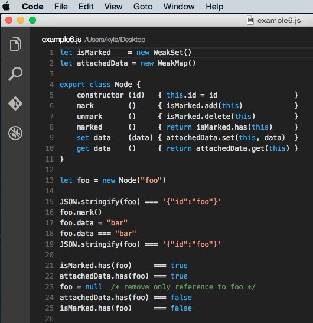

1. "for in" and "for of"
(1) "for in" belongs to ES5 and "for of" belongs to ES6
(2) The two lines of code in following picture are the same.
2. Web optimization
(1) Priority loading and defer loading:
<link rel="preload">
<script src="" defer>
(2) Cache, Compress, CDN
(3) Picture optimization:
a. Right picture type
b. Lazy loading
c. CSS Sprites
d. Use SVG and canvas
e. Use "srcset" and "picture" attributes
f. Use base64 code
(4) Use Webpack, Glup...
(5) Use Reactjs, Angularjs
(6) Build reuse components
3. Clear the space when using "inline-block"
Set "font-size:0;"
4. Disable all click events
.ele {pointer-events:none;} (Include links)
5. Use pseudo class to show the link when printing "a" tag
@media print {
a[href]:after{
content:"("attr(href)")";
}
}
6. What is AB testing?
In marketing and web analytics, A/B testing (bucket tests or split-run testing) is a controlled experiment with two variants, A and B. It is a form of statistical hypothesis testing or "two-sample hypothesis testing" as used in the field of statistics. In online settings, such as web design (especially user experience design), the goal of A/B testing is to identify changes to web pages that increase or maximize an outcome of interest (e.g., click-through rate for a banner advertisement). Formally the current web page is associated with the null hypothesis. A/B testing is a way to compare two versions of a single variable typically by testing a subject's response to variable A against variable B, and determining which of the two variables is more effective.
7. ES6 Map and Set
Map:
Set:
8. ES6 Weakmap and Weakset
Weakmap:
Weakset:

9. Difference between weakmap/weakset and map/set?
(1) map/set is strong type, they cannot be garbage collected, so if we put some elements in it, maybe it would be hard to clear them in memory.
(2) However, weakmap/weakset is weak type, which means the type of key should be an object!!! Because object can be cleared if we don't need it by setting "object = null".
10. How to explain the following example? (Write by Nicholas C. Zakas)
It uses a weakmap to contain private variables, because the key should be an object, so he uses "this" to be the key, and set a {name:name} to be the value.
In the Person.prototype.getName() function, he uses "get()" method to get the value whose key === "this"! And this function returns an object, so that we can use "obj.name" to get the value.
(This example is stunning for using "this" to be the key.)
(That's all)